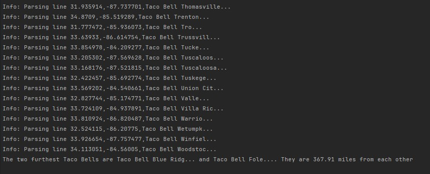

A test-driven C# project focused on parsing location data from a CSV file, calculating distances between geolocations, and integrating structured logging for observability and debugging
The project demonstrates test-driven development with xUnit, writing tests first to validate parsing accuracy before implementing functionality. The TacoParser class processes CSV data line-by-line, splitting on commas and extracting location names and geographic coordinates into strongly-typed data structures.
The algorithm uses nested loops to iterate through every possible location pair, creating Coordinate objects from the parsed data and leveraging the GetDistanceTo method to compute distances. An if-block tracks the maximum distance found, updating the stored locations and distance as it discovers larger separations.
Technologies: C#, xUnit, GeoCoordinate.Core, LINQ, structured logging